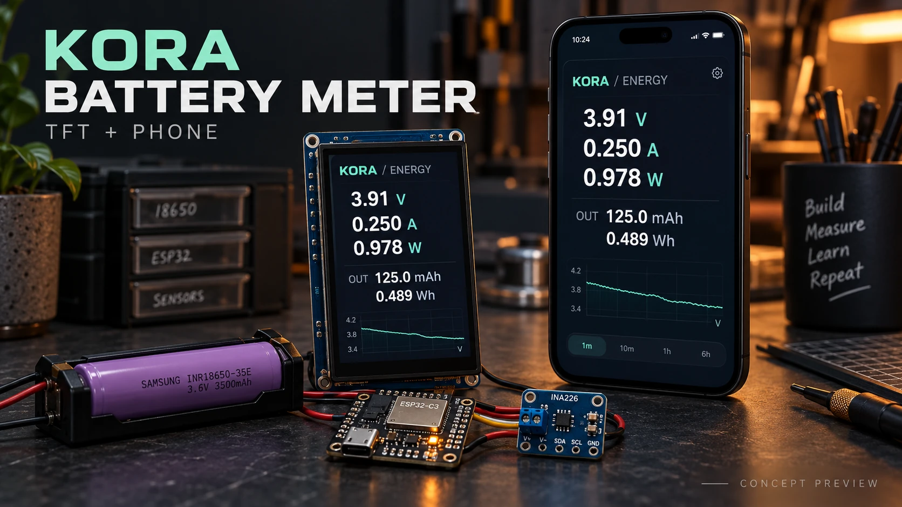
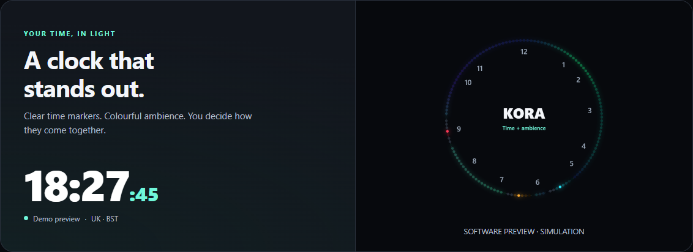
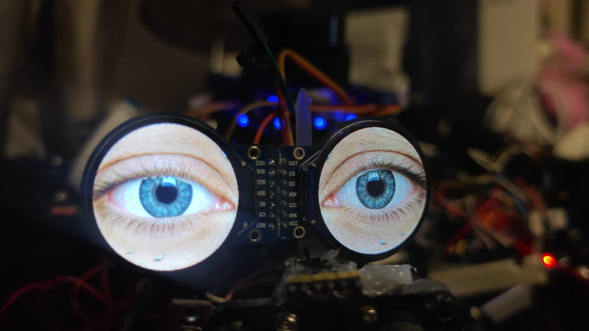
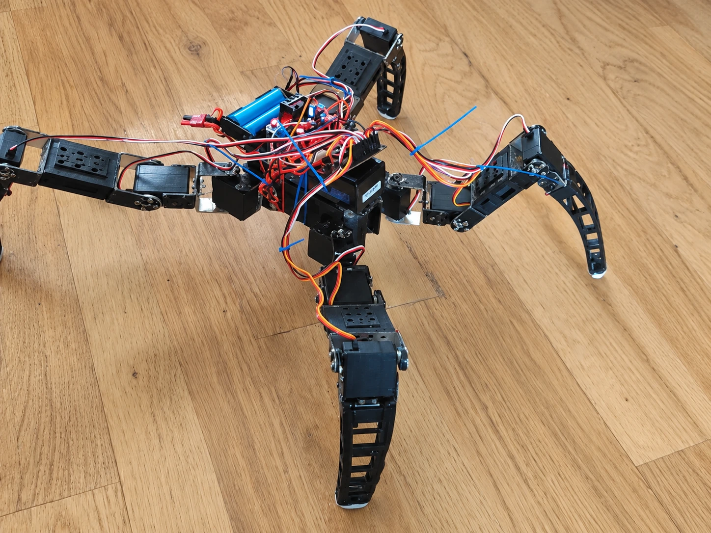
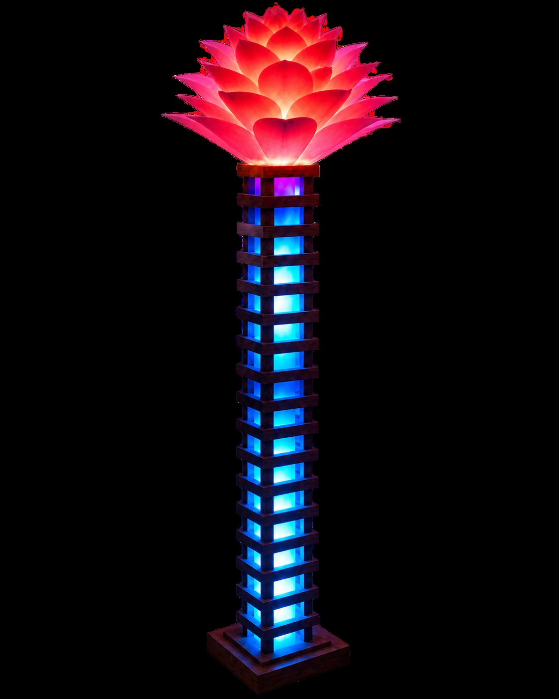

CONCEPT PREVIEW / ESP32-C3 + INA226
KORA Battery Meter
TFT and phone energy monitor: V, A, W and session mAh/Wh. Hardware testing pending.
Code & wiring / Kod i połączenia →Free code for my builds. Weather, the KORA clock, games, animated eyes and control systems, with hardware notes and setup guides.

TFT and phone energy monitor: V, A, W and session mAh/Wh. Hardware testing pending.
Code & wiring / Kod i połączenia →

Version 5.9.1: flying birds over all four cities, larger weather icons and outlined digits, plus Neon Blocks. Complete Arduino code, wiring, parts and a 3D-printable desk enclosure.
Explore & download →Gallery images are software-rendered previews.

KORA 2.0: clear time markers on 137 LEDs, 29 animations, an EN/PL browser panel, OLED and OTA. Download the ESP8266 Arduino code, wiring diagram and setup guide.
Explore the clock & download →Software preview. Watch the real build with KORA narration.
Watch the build film →
Animated eyes on a rectangular screen or two round displays. Variants, downloads and PL/EN guides.
Open project →Internet radio with a display, IR controls and RGB lighting. Hardware notes, wiring and reference code.
Open project →
Robot controller code with browser calibration. Instructions included in the project directory.
Open project →Kora Quadruped prototype. Photo retouched with AI from the original screenshot.

Real lamp geometry: one 137-LED strip. LEDs 0–99 form the main body and LEDs 100–136 form the plume. Local lampa.local control, OLED, OTA, Sinric/Alexa and dedicated plume effects.
Project, setup & code →